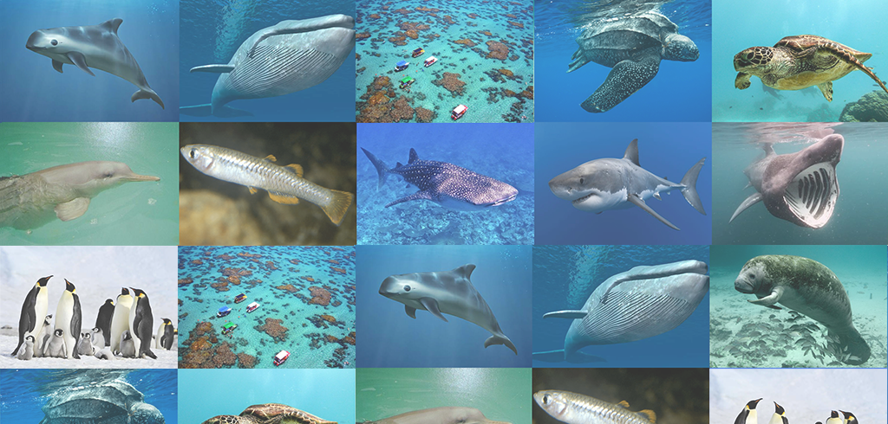
Vidas Marinhas em extinção
A ameaça de extinção não está só nas superfícies terrestres, hoje os seres vivos que habitam nas águas também têm que conviver com esse risco.
Segundo o IBAMA (Instituto Brasileiro do Meio Ambiente e dos Recursos Naturais), mais de 30 espécies de animais aquáticos invertebrados correm risco de extinção. Já a lista de peixes ameaçados de desaparecer da natureza supera a marca de 100 subespécies.
Confira a lista das vidas marinhas que mais correm risco de serem extintas por conta de atitudes insustentáveis por parte dos seres humanos:
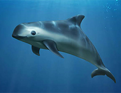
01.
Vaquita
VA vaquita é um boto da mesma ordem das baleias e golfinhos (Cetacea). Ele é um dos animais que mais correm risco de extinção, se igualando aos pandas, e é considerada o menor boto do mundo. O grande problema, nesse caso, é a pesca ilegal. Alguns povos consideram a carne da vaquita uma iguaria, com poderes medicinais, como é o caso dos chineses. O Comitê Internacional para a Recuperação da Vaquita estima em 30 o número remanescente destes seres aquáticos.
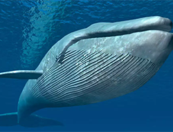
02.
Baleia-azul
Considerada o maior animal do planeta, Existem pelo menos três subespécies de baleia-azul Balenoptera musculus que vivem nos mares da Antártica e nos oceanos Índico, Pacífico e Atlântico. A IUCN (International Unior for Conservation of Nature), classifica a baleia-azul como “em perigo” o que significa que esses seres correm sério risco de extinção. Atualmente, as estimativas globais dão conta de 10.000-25.000 indivíduos dessa espécie, correspondente a aproximadamente 3-11% da sua população em 1911.
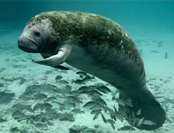
03.
Peixe-boi marinho
O peixe-boi marinho é um mamífero que habita as águas do continente americano (norte, sul e central). Na lista IUCN ele está classificado como “vulnerável” mas a espécie no Brasil é considera a do mamífero aquático mais ameaçado de extinção. Em várias localidades ele já está extinto (Antígua e Barbuda; Aruba; Barbados; Dominica) etc.
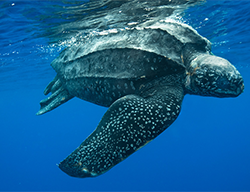
04.
Tartaruga-de-couro
Essa tartaruga-gigante, que pode medir até 2 metros e pesar 900 quilos, é protegida pelo Projeto Tamar, iniciativa brasileira que atua na preservação das espécies de tartarugas marinhas, ameaçadas de extinção. Esta é uma espécie “criticamente em perigo“.
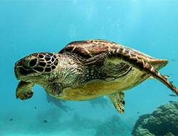
05.
Tartaruga-de-pente
Também protegida pelo Projeto Tamar, a tartaruga-de-pente está criticamente ameada, segundo classificação da IUCN. O maior risco, nesse caso, deve-se a procura pelos ovos e cascos das fêmeas.
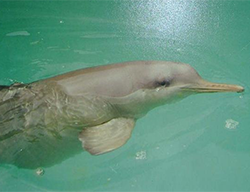
06.
Toninha
A toninha é o golfinho mais ameaçado de extinção em todo Atlântico Sul pois sofre das consequências da pesca desenfreada. É um golfinho muito “tímido” e só visita a superfície para respirar, quando fica mais vulnerável à capturas. Está como “vulnerável” na lista vermelha da IUCN.
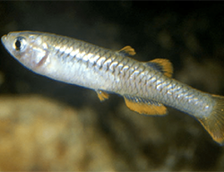
07.
Scaturiginichthys
Esse pequeno peixe australiano, que costuma medir até 3 centímetros de comprimento, também corre risco de extinção. Segundo estimativa da IUCN, restam de 2 a 4 mil exemplares desta espécie, atualmente classificada como “criticamente em perigo“.
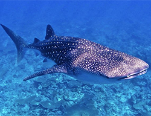
08.
Tubarão-baleia
Considerado o maior peixe predador, em termos de tamanho, o tubarão-branco pode chegar a 7,51 metros e pesar cerca de 2,5 toneladas. Ele é encontrado em todos os oceanos e é protegido em vários países. O maior risco a esses animais é a pesca esportiva.
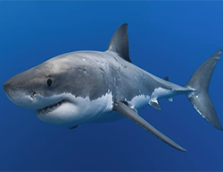
09.
Tubarão-branco
Considerado o maior peixe predador, em termos de tamanho, o tubarão-branco pode chegar a 7,51 metros e pesar cerca de 2,5 toneladas. Ele é encontrado em todos os oceanos e é protegido em vários países. O maior risco a esses animais é a pesca esportiva.
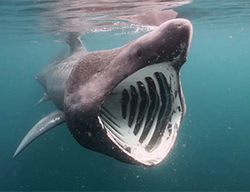
10.
Tubarão-frade
Segundo maior peixe conhecido, o tubarão-frade pode chegar a 10 metros de comprimento. É encontrado em todos os oceanos e está ameaçado de extinção, principalmente, por causa da pesca predatória.
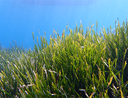
11.
Posidonia oceanica
A Posidonia oceanica é uma espécie de angiosperma marinha endêmica do Mar Mediterrâneo. Forma grandes tapetes em zonas pouco profundas do mar, e é considerada de grande importância para a conservação ambiental da região. O fruto é livre e flutuante, conhecido na Itália como “azeitona-do-mar” (l'oliva di mare).
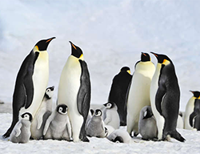
12.
Pinguins-imperadores
O grande vilão que coloca em risco a continuidade dos pinguins-imperadores, está ligado ao degelo, que afeta desde a reprodução dos animais até a sua busca por alimentos. O aquecimento das águas causa quebra do gelo, fazendo com que filhotes de pinguim sejam levados precocemente para o oceano, culminando em afogamento.
A ameaça de extinção
há muito saiu das
superfícies terrestres
E o grande responsável por essa ameaça é a espécie humana, com seus equipamentos cada vez mais modernos, e sua mentalidade autocentrada. Ninguém percebeu ainda, mas um estudo da Universidade de Stanford traz o alerta: se as coisas continuarem iguais, criaturas marinhas de grande porte vão sumir da terra igual os dinossauros de outrora.